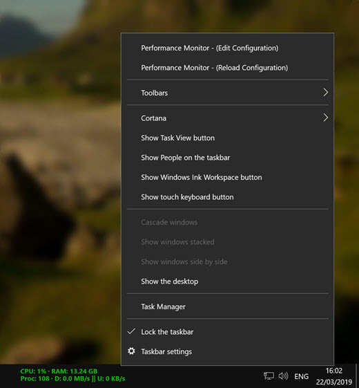

Displays performance counters on the Windows Taskbar. This is a replacement for CureInfo. It has support for xml configuration and is compatible with Vista/7 (Taskbar Translucency, etc...)
Supported Operating Systems
Perfmonbar runs on Windows XP (SP3, SP2 might or might not work), Vista, 7, 8, 8.1, 10 both 32-bit and 64-bit
Screenshots
Notes
- You will have to edit the default
config.xmlto match your system. - For the known issues see GitHub Issues.